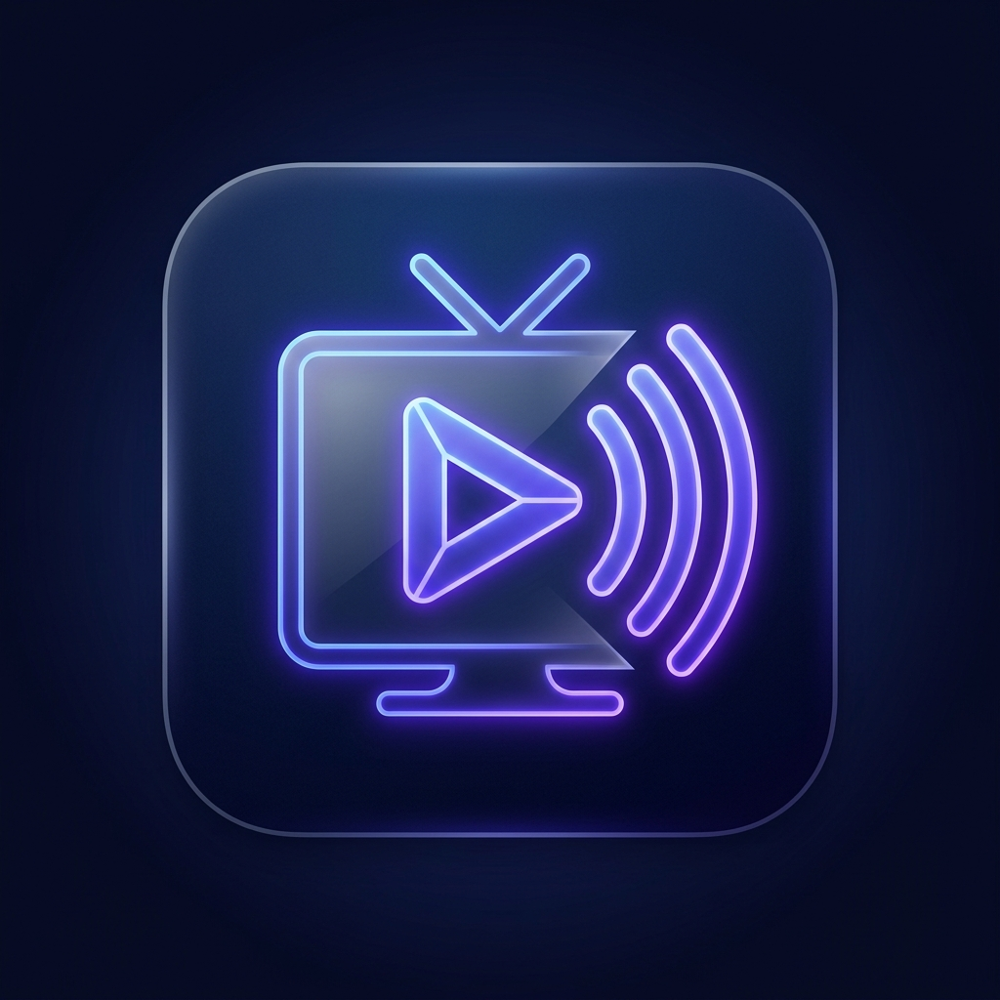

Chargement du flux direct...
FHD
CH 01
RTS 1 Sénégal
🇸🇳 Sénégal • Direct 24/7
DIRECT
⚠️
Flux momentanément indisponible
Appuyez sur
OK
pour réessayer ou
▲ / ▼
pour zapper.

BOKK
TV
1080p Smart TV
12:00
Catégories
Bouquet & Thématique
🇸🇳 Sénégal
18 chaînes